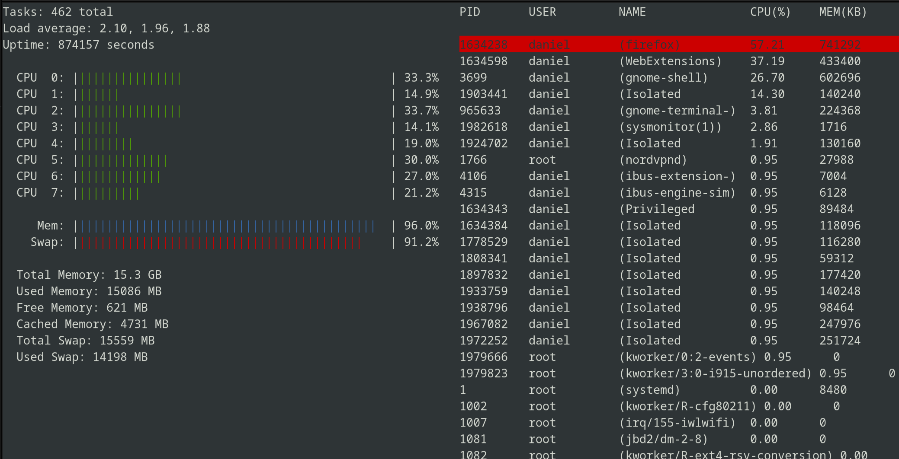

Features
- Displays a real-time list of running processes
- Live CPU usage monitoring
- Intuitive and responsive interface
Download Here
Download a ready to run static binary from the latest GitHub release.
Demo
Repository
Check out the code and contribute to the project on GitHub.